dataframe の取り扱い [2021 版]
julia python r
#+File Created:
#+Last Updated:
dataframe の取り扱いについて.
以前もほとんど同じことやったけど, version が上がって変わった部分もあったりすっかり忘れてる部分もあったりするのでもう一度改めてやってみよう.
1 環境
計算機環境を書いておこう.
いくつかのパソコンでやったので全部書いておく.
全部 Mac だけど.
環境1
MacBook Air (M1, 2020) メモリ16GB
OS: MacOS Big Sur 11.2.3
python: miniforge3-4.10 (Python3.9.2)
Julia: version 1.6.1 (arm 用バイナリが無い)
R: version 4.0.5 (arm 用バイナリが無い)
ruby: 3.0.1p64
perl: v5.32.1
環境2
iMac(2019) メモリ16GB
OS: MacOS Mojave 10.14.6
python: anaconda3-2020.11 (Python3.8.5)
Julia: version 1.5.3
R: version 4.0.4
ruby: 3.0.1p64
perl: v5.32.1
環境3
MacBook Pro(2019) メモリ32GB
OS: MacOS Catalina 10.15.5
python: anaconda3-2020.11 (Python3.8.5)
Julia: version 1.6.1
R: version 4.0.4
ruby: 3.0.1p64
perl: v5.32.1
2 はじめに
fitbit から心拍数データをとってきた.
こんなデータである.
1: import pandas as pd 2: df = pd.read_csv("data/heart_beats_summary_2021-02.data",sep="\t",header=0, parse_dates=[0]) 3: print(df.head(10))
date cat cal min
0 2021-02-01 Out_of_Range 1548.62703 1298
1 2021-02-01 Fat_Burn 350.27367 93
2 2021-02-01 Cardio 108.05331 15
3 2021-02-01 Peak 0.00000 0
4 2021-02-02 Out_of_Range 1436.70932 1209
5 2021-02-02 Fat_Burn 437.81104 90
6 2021-02-02 Cardio 177.95100 22
7 2021-02-02 Peak 9.49072 1
8 2021-02-03 Out_of_Range 1437.58534 1205
9 2021-02-03 Fat_Burn 762.53009 162
プログラム 2 行目:
pd.read_csv でファイルを読み込む. pd.read_table とほぼ同じ.
区切り文字の default が read_csv のときは ",", read_table のときは "\t"
引数は…
- ファイル名
- sep="\t" # 区切り文字
- header=0 # 列名が書いてある行数(default=0) 列名が無い場合は header=None とする.
- names=('date','cat','cal','min') # のように自分で列名を指定できる
- index_col=0 # 行名がある場合. 行名が書いてある列番号を指定できる.
- usecols=[1,3] # 特定の列だけ読み込む場合(例では 2 列目と 4 列目のみ取り込み)
参考:
pandasでcsv/tsvファイル読み込み（read_csv, read_table） | note.nkmk.me
このデータを, 1 日 1 行にしてグラフ化したい.
こんな感じ:
| date | out_of_range | fat_burn | cardio | peak |
|---|---|---|---|---|
| 2021-02-01 | 1298 | 93 | 15 | 0 |
| 2021-02-02 | 1209 | … | … | … |
このデータを例にして, データをいい感じで加工しつつ簡単なグラフを描くところまでをやってみたい.
R, python, Julia, で似たようなことをやるにはどうするかをまとめておく.
3 データ加工
3.1 R
R については, 標準の dataframe を使うか tidyverse を使うか, 選択肢が複数ある.
tidyverse の方が便利な機能が豊富っぽいが, dataframe しか使えない場合もある.
参考:
dplyr: 高速data.frame処理 - Heavy Watal
tidyr: シンプルなデータ変形ツール - Heavy Watal
tidyverse :: Jun Nishii
須通り_統計_Tidyverseによるデータフレーム加工（01）tidyr
R: tidyverseをふつうに使えるようになる 1/5 – Think it aloud
R: tidyverseをふつうに使えるようになる（tibbleとdplyr） 2/5 – Think it aloud
3.2 dataframe
まず普通にデータの読み込み. read.table は read.csv でもよい.
1: df0 <- read.table(file="data/heart_beats_summary_2021-02.data",header=TRUE, sep="\t") 2: print(head(df0,5))
date cat cal min
1 2021-02-01 Out_of_Range 1548.6270 1298
2 2021-02-01 Fat_Burn 350.2737 93
3 2021-02-01 Cardio 108.0533 15
4 2021-02-01 Peak 0.0000 0
5 2021-02-02 Out_of_Range 1436.7093 1209
特定の列を抽出する. 1,2,4 列目だけ使いたい(3 列目(cal) は今回はいらないので削除したい).
R の配列は 1 から始まる(1-based).
1: df0 <- read.csv(file="data/heart_beats_summary_2021-02.data",header=TRUE, sep="\t") 2: df <- df0[,c(1,2,4)] 3: print(head(df,5))
date cat min
1 2021-02-01 Out_of_Range 1298
2 2021-02-01 Fat_Burn 93
3 2021-02-01 Cardio 15
4 2021-02-01 Peak 0
5 2021-02-02 Out_of_Range 1209
cat 列が "Out_of_Range" の行のみを取り出してみよう.
1: df0 <- read.csv(file="data/heart_beats_summary_2021-02.data",header=TRUE, sep="\t") 2: df <- df0[,c(1,2,4)] 3: dfo <- df[df$cat == "Out_of_Range",] # 条件を満たす行を抽出 4: print(head(dfo,5))
date cat min
1 2021-02-01 Out_of_Range 1298
5 2021-02-02 Out_of_Range 1209
9 2021-02-03 Out_of_Range 1205
13 2021-02-04 Out_of_Range 1255
17 2021-02-05 Out_of_Range 1289
cat 列は全部同じ値なので要らないか.
df[,c(1,3)] で 1列目と3列目がとれる.
1: df0 <- read.csv(file="data/heart_beats_summary_2021-02.data",header=TRUE, sep="\t") 2: df <- df0[,c(1,2,4)] 3: dfo <- df[df$cat == "Out_of_Range",c(1,3)] 4: print(head(dfo,5))
date min
1 2021-02-01 1298
5 2021-02-02 1209
9 2021-02-03 1205
13 2021-02-04 1255
17 2021-02-05 1289
min 列の名前を Out_of_Range に変えたい.
参考:
列名の変更: Rのデータフレームで、列名指定で列名の一部を変更する方法 - Rプログラミングの小ネタ
names(df) で列名がとれるのでこれを使う.
1: df0 <- read.csv(file="data/heart_beats_summary_2021-02.data",header=TRUE, sep="\t") 2: df <- df0[,c(1,2,4)] 3: dfo <- df[df$cat == "Out_of_Range",c(1,3)] 4: names(dfo)[2] <- "Out_of_Range" # 列名の変更 5: print(head(dfo,5))
date Out_of_Range
1 2021-02-01 1298
5 2021-02-02 1209
9 2021-02-03 1205
13 2021-02-04 1255
17 2021-02-05 1289
Out_of_Range だけでなく, Fat_Burn, Cardio, Peak の各カテゴリについても同じことをやってみる.
for 文を使う.
参考: 繰り返し文
データフレームの配列を作るには, 以下のようにする.
1: array <- list() # c() でもよい. 2: array <- append(array, list(add_ele)) # list(add_ele) にしないと "データフレームの配列" にはならない点！！
参考:
Python - Rでデータフレーム の配列を作りたい｜teratail
A better way to push and pop to/from lists in R? - Stack Overflow
リスト
Rプログラム (TAKENAKA's Web Page)
1: df0 <- read.csv(file="data/heart_beats_summary_2021-02.data",header=TRUE, sep="\t") 2: df <- df0[,c(1,2,4)] 3: adf <- list() 4: cats <- c("Out_of_Range","Fat_Burn","Cardio","Peak") 5: for (cat in cats) { 6: dfo <- df[df$cat == cat,c(1,3)] 7: names(dfo)[2] <- cat 8: adf <- append(adf,list(dfo)) 9: } 10: print(head(adf[[2]],5)) # adf[[1]] 二重にかっこを付ける必要あり
date Fat_Burn
2 2021-02-01 93
6 2021-02-02 90
10 2021-02-03 162
14 2021-02-04 134
18 2021-02-05 114
ここまでで, 表が何個かできた.
date で merge して一つの表にしたい.
list の最初の要素を取り出すときは以下のように２ステップ必要(めんどくさい)
1: mdf <- adf[ 1 ] # shift(@adf) で最初の要素を取り出す部分 2: adf <- adf[ -1 ] # shift(@adf) 最初の要素を削除する部分
1: df0 <- read.csv(file="data/heart_beats_summary_2021-02.data",header=TRUE, sep="\t") 2: df <- df0[,c(1,2,4)] 3: adf <- list() 4: cats <- c("Out_of_Range","Fat_Burn","Cardio","Peak") 5: for (cat in cats) { 6: dfo <- df[df$cat == cat,c(1,3)] 7: names(dfo)[2] <- cat 8: adf <- append(adf,list(dfo)) 9: } 10: # shift(@adf) 11: mdf <- adf[1] # Out_of_Range 12: adf <- adf[-1] # Fat_Burn, Cardio, Peak 13: for (ndf in adf) { 14: mdf <- merge(mdf, ndf, by="date") # 表の merge 15: } 16: print(head(mdf,5))
date Out_of_Range Fat_Burn Cardio Peak
1 2021-02-01 1298 93 15 0
2 2021-02-02 1209 90 22 1
3 2021-02-03 1205 162 14 0
4 2021-02-04 1255 134 5 2
5 2021-02-05 1289 114 6 0
これと同じことは Reduce 関数を使ってもできるようだ.
Reduce 関数とは？
こんな感じで動くものらしい.
Reduce(関数(a,b), 配列) –> x = 関数(配列要素(1), 配列要素(2)) を計算 –> y = 関数(x, 配列要素(3)) –> z = 関数(y, 配列要素(4)) …
参考:
Reduce関数活用例:福利計算シミュレーション
Reduce 関数:
Reduce(関数, リスト)
関数は, ２つの引数をとる.
例:
x <- Reduce(function(a,b) { a+b }, c(1,2,5,7))
プログラムの動きの解説:
まず a に 1, b に 2 を入れる.
a + b を計算. 3 になる.
a に 3, b に 5 を入れる.
a + b を計算. 8 になる.
a に 8, b に 7 を入れる.
a + b を計算. 15 になる.
x に 15 が入る.
はず.
実際にやってみる.
1: data <- c(1,2,5,7) 2: x <- Reduce(function(a,b) { a+b }, data) 3: x
[1] 15
Reduce を使って merge してみる.
1: df0 <- read.csv(file="data/heart_beats_summary_2021-02.data",header=TRUE, sep="\t") 2: df <- df0[,c(1,2,4)] 3: adf <- list() 4: cats <- c("Out_of_Range","Fat_Burn","Cardio","Peak") 5: for (cat in cats) { 6: dfo <- df[df$cat == cat,c(1,3)] 7: names(dfo)[2] <- cat 8: #print(head(dfo,5)) 9: #adf[length(adf)+1] <- dfo 10: adf <- append(adf,list(dfo)) 11: } 12: mdf <- Reduce(function(d1,d2) merge(d1,d2,by="date"), adf) # <-- ここ 13: print(head(mdf,5))
date Out_of_Range Fat_Burn Cardio Peak
1 2021-02-01 1298 93 15 0
2 2021-02-02 1209 90 22 1
3 2021-02-03 1205 162 14 0
4 2021-02-04 1255 134 5 2
5 2021-02-05 1289 114 6 0
(omake)
ついでに Reduce 系関数をいくつか調査.
apply:
行ごと, 列ごとに関数を適用して結果を返す.
apply(行列データ, 行ごと(1)or列ごと(2), 関数(ベクトルを引数にとるもの), 関数のその他のオプション)
以下の参考ページが図もあってわかりやすい.
Rプログラム (TAKENAKA's Web Page)
apply 系関数の説明
purrr: ループ処理やapply系関数の決定版 - Heavy Watal
join の種類についてのわかりやすい説明
dplyrを使いこなす！JOIN編 - Qiita
須通り_統計_Tidyverseによるデータフレーム加工（02）dplyr_join による複数データフレームの結合／欠損値補完／ルックアップ
データの結合 - *_join関数
最後は書き出し. write.csv() を使う.
1: df0 <- read.csv(file="data/heart_beats_summary_2021-02.data",header=TRUE, sep="\t") 2: df <- df0[,c(1,2,4)] 3: adf <- list() 4: cats <- c("Out_of_Range","Fat_Burn","Cardio","Peak") 5: for (cat in cats) { 6: dfo <- df[df$cat == cat,c(1,3)] 7: names(dfo)[2] <- cat 8: #print(head(dfo,5)) 9: #adf[length(adf)+1] <- dfo 10: adf <- append(adf,list(dfo)) 11: } 12: mdf <- Reduce(function(d1,d2) merge(d1,d2,by="date"), adf) 13: write.csv(mdf,"data/r.csv", quote=FALSE, row.names=FALSE)
3.3 tidyverse
データの読み込みは read_delim(file, delim, …)
read_tsv(file) でもよい.
1: library(tidyverse) 2: df0 <- read_delim("data/heart_beats_summary_2021-02.data","\t") 3: print(head(df0,5))
# A tibble: 5 x 4 date cat cal min <date> <chr> <dbl> <dbl> 1 2021-02-01 Out_of_Range 1549. 1298 2 2021-02-01 Fat_Burn 350. 93 3 2021-02-01 Cardio 108. 15 4 2021-02-01 Peak 0 0 5 2021-02-02 Out_of_Range 1437. 1209
列ごとの型情報も入っているようだ.
特定の列を抽出する
1: library(tidyverse) 2: df0 <- read_tsv("data/heart_beats_summary_2021-02.data") 3: df <- df0[,c(1,2,4)] # <-- dataframe と同じでいける 4: print(head(df,5))
# A tibble: 5 x 3 date cat min <date> <chr> <dbl> 1 2021-02-01 Out_of_Range 1298 2 2021-02-01 Fat_Burn 93 3 2021-02-01 Cardio 15 4 2021-02-01 Peak 0 5 2021-02-02 Out_of_Range 1209
cat ＝＝ "Out_of_Range" の行を取り出す
filter(df, cat＝＝"Out_of_Range") を使う.
1: library(tidyverse) 2: df0 <- read_tsv("data/heart_beats_summary_2021-02.data") 3: df <- df0[,c(1,2,4)] 4: dfo <- filter(df, cat=="Out_of_Range") # <-- cat 列が "Out_of_Range" のもののみ抽出 5: print(head(dfo,5))
# A tibble: 5 x 3 date cat min <date> <chr> <dbl> 1 2021-02-01 Out_of_Range 1298 2 2021-02-02 Out_of_Range 1209 3 2021-02-03 Out_of_Range 1205 4 2021-02-04 Out_of_Range 1255 5 2021-02-05 Out_of_Range 1289
cat 列はいらない. 1列目, 3列目のみを取り出したい.
tidyverse では, パイプ %>% を使って以下の様にも書けるようだ.
df %>% select(date,min) # df から date, min 列だけ取り出す場合.
1: library(tidyverse) 2: df0 <- read_tsv("data/heart_beats_summary_2021-02.data") 3: df <- df0[,c(1,2,4)] 4: dfo <- filter(df, cat=="Out_of_Range") %>% select(date,min) # <-- date, min 列だけ取り出す. 5: print(head(dfo,5))
# A tibble: 5 x 2 date min <date> <dbl> 1 2021-02-01 1298 2 2021-02-02 1209 3 2021-02-03 1205 4 2021-02-04 1255 5 2021-02-05 1289
dataframe と同じようにも書ける.
普通に 1,3 列目だけ取り出す, という書き方もできる.
1: library(tidyverse) 2: df0 <- read_tsv("data/heart_beats_summary_2021-02.data") 3: df <- df0[,c(1,2,4)] 4: dfo0 <- filter(df, cat=="Out_of_Range") 5: dfo <- dfo0[,c(1,3)] # <-- 1,3 列目だけ 6: print(head(dfo,5))
# A tibble: 5 x 2 date min <date> <dbl> 1 2021-02-01 1298 2 2021-02-02 1209 3 2021-02-03 1205 4 2021-02-04 1255 5 2021-02-05 1289
列名の変更
tidyverse では
new_df <- rename(df, 新しい列名 = 古い列名)
参考:
Rでdplyrをつかって任意の列の列名を変更する方法 - 備忘ログ
1: library(tidyverse) 2: df0 <- read_tsv("data/heart_beats_summary_2021-02.data") 3: df <- df0[,c(1,2,4)] 4: dfo <- filter(df, cat=="Out_of_Range") %>% select(date,min) %>% rename(Out_of_Range = min) 5: print(head(dfo,5))
tidyvers はパイプ %>% で繋げていけるので慣れれば書きやすい. 結構楽しいかも.
df %>% 関数(x,y,z,…) は 関数(df, x,y,z…) と同じ意味.
Out_of_Range だけでなく全部のカテゴリについてやる.
先程と同様, for 文を使おう.
参考:
【R】dplyr rename()の中で変数を使う - Qiita
列名変更の rename だが…
rename の中で変数を使う場合は, rename(!!変数 := 前の列名) とする必要あり. <– 注意
うーん以外とめんどくさい.
1: library(tidyverse) 2: df0 <- read_tsv("data/heart_beats_summary_2021-02.data") 3: df <- df0[,c(1,2,4)] 4: cats <- c("Out_of_Range", "Fat_Burn", "Cardio", "Peak") 5: adf <- list() 6: for (x in cats) { 7: #dfo <- filter(df, cat==x) %>% select(date,min) %>% rename(x = min) # これだと x という文字列が入ってしまう. 8: dfo <- filter(df, cat==x) %>% select(date,min) %>% rename(!!x := min) 9: adf <- append(adf,list(dfo)) 10: } 11: print(head(adf[[2]],5))
# A tibble: 5 x 2 date Fat_Burn <date> <dbl> 1 2021-02-01 93 2 2021-02-02 90 3 2021-02-03 162 4 2021-02-04 134 5 2021-02-05 114
date で merge して一つの表にする.
ここは dataframe と同じでいける.
1: library(tidyverse) 2: df0 <- read_tsv("data/heart_beats_summary_2021-02.data") 3: df <- df0[,c(1,2,4)] 4: cats <- c("Out_of_Range", "Fat_Burn", "Cardio", "Peak") 5: adf <- list() 6: for (x in cats) { 7: dfo <- filter(df, cat==x) %>% select(date,min) %>% rename(!!x := min) 8: adf <- append(adf,list(dfo)) 9: } 10: mdf <- adf[[1]] 11: adf <- adf[-1] 12: for (ndf in adf) { 13: mdf <- full_join(mdf, ndf, by="date") 14: } 15: print(head(mdf,5))
# A tibble: 5 x 5 date Out_of_Range Fat_Burn Cardio Peak <date> <dbl> <dbl> <dbl> <dbl> 1 2021-02-01 1298 93 15 0 2 2021-02-02 1209 90 22 1 3 2021-02-03 1205 162 14 0 4 2021-02-04 1255 134 5 2 5 2021-02-05 1289 114 6 0
色々調べてたら, データフレームのリストをまとめて join する方法をみつけた！！
参考:
r - Simultaneously merge multiple data.frames in a list - Stack Overflow
list_of_df %>% reduce(full_join, by="date") こんな感じで書くといけるらしい.
1: library(tidyverse) 2: df0 <- read_tsv("data/heart_beats_summary_2021-02.data") 3: df <- df0[,c(1,2,4)] 4: cats <- c("Out_of_Range", "Fat_Burn", "Cardio", "Peak") 5: adf <- list() 6: for (x in cats) { 7: dfo <- filter(df, cat==x) %>% select(date,min) %>% rename(!!x := min) 8: adf <- append(adf,list(dfo)) 9: } 10: mdf <- adf %>% reduce(full_join, by="date") # <-- ここ 11: print(head(mdf,5))
# A tibble: 5 x 5 date Out_of_Range Fat_Burn Cardio Peak <date> <dbl> <dbl> <dbl> <dbl> 1 2021-02-01 1298 93 15 0 2 2021-02-02 1209 90 22 1 3 2021-02-03 1205 162 14 0 4 2021-02-04 1255 134 5 2 5 2021-02-05 1289 114 6 0
write_csv を使って csv 形式に書き出す.
1: library(tidyverse) 2: df0 <- read_tsv("data/heart_beats_summary_2021-02.data") 3: df <- df0[,c(1,2,4)] 4: cats <- c("Out_of_Range", "Fat_Burn", "Cardio", "Peak") 5: adf <- list() 6: for (x in cats) { 7: dfo <- filter(df, cat==x) %>% select(date,min) %>% rename(!!x := min) 8: adf <- append(adf,list(dfo)) 9: } 10: mdf <- adf %>% reduce(full_join, by="date") 11: write_csv(mdf,"data/rv.csv")
3.4 Python
Python では pandas を使ってみる.
3.5 pandas
まずデータを普通に読み込み.
0 列目は日付として読み込み.
2 列目(0-based) は使わないので削除する.
参考:
pandasでcsv/tsvファイル読み込み（read_csv, read_table） | note.nkmk.me
1: import pandas as pd 2: df = pd.read_csv('data/heart_beats_summary_2021-02.data',sep='\t', header=0, parse_dates=[0]) 3: df2 = df.iloc[:,[0,1,3]] 4: print(df2.head(5))
date cat min
0 2021-02-01 Out_of_Range 1298
1 2021-02-01 Fat_Burn 93
2 2021-02-01 Cardio 15
3 2021-02-01 Peak 0
4 2021-02-02 Out_of_Range 1209
プログラム2 行目:
read_csv で表敬式データを読み込み.
tab 区切りなら read_table("foo.tsv") で良い.
- header=0 は 0 行目(最初の行)が column 名の場合.
- column 名がない場合は header=None とする.
- read_csv("foo.tsv", names=("A","B","C","D")) –> column 名を A, B, C, D として読み込む.
- parse_dates= は 0 列目が日付として扱われることを示す.
プログラム 3 行目:
位置の指定方法をここでまとめておく(多分覚えられないけど…).
- at, loc は, 行名, 列名 を指定して値を得る.
- iat, iloc は, 行番号,列番号 を指定して値を得る.
取得データについて.
- at, iat は単独の要素の値を取得する際に使う.
- loc, iloc は複数の要素の値
- 複数の要素指定では, リスト [0,1,3] 及びスライス start:stop:step が使える.
- ： あるいは ：： で全部という意味になる.
- 複数の要素指定では, リスト [0,1,3] 及びスライス start:stop:step が使える.
参考:
pandasで任意の位置の値を取得・変更するat, iat, loc, iloc | note.nkmk.me
データ取り出しをやってみる.
1: import pandas as pd 2: df = pd.read_table("data/heart_beats_summary_2021-02.data",header=0, parse_dates=[0]) 3: print(df.iat[0,1]) # 0 行 1 列目(0-based)の値 4: #print(df.iloc[::,2]) 5: print(df.iloc[: ,2].head(5)) # 全行 2列目(0-based)
Out_of_Range 0 1548.62703 1 350.27367 2 108.05331 3 0.00000 4 1436.70932 Name: cal, dtype: float64
usecols を使うと, 要らない行は最初から読み込まない.
usecols=[0,1,3] で 2 列目(Python の配列番号は 0 から始まる 0-based)を読み込まない.
1: import pandas as pd 2: df = pd.read_csv("data/heart_beats_summary_2021-02.data",sep="\t",header=0, parse_dates=[0], usecols=[0,1,3]) 3: print(df.head(5))
date cat min
0 2021-02-01 Out_of_Range 1298
1 2021-02-01 Fat_Burn 93
2 2021-02-01 Cardio 15
3 2021-02-01 Peak 0
4 2021-02-02 Out_of_Range 1209
ここから表をバラバラにして再構成する.
まずは cat 列 ＝＝ 'Out_of_Range' のデータを取り出す.
df[df['cat'] ＝＝'Out_of_Range'] <– こんな感じで取り出せる.
1: import pandas as pd 2: df = pd.read_table("data/heart_beats_summary_2021-02.data",header=0, parse_dates=[0], usecols=[0,1,3]) 3: dfo = df[df['cat']=='Out_of_Range'] 4: # dfo = df[df.iloc[:,1]=='Out_of_Range'] 5: # dfo = df[df.loc[:,'cat']=='Out_of_Range'] 6: print(dfo.head(5))
date cat min
0 2021-02-01 Out_of_Range 1298
4 2021-02-02 Out_of_Range 1209
8 2021-02-03 Out_of_Range 1205
12 2021-02-04 Out_of_Range 1255
16 2021-02-05 Out_of_Range 1289
列 cat ＝＝ 'Out_of_Range' である行を取り出す方法はいくつかあった. これ以外にもあるかもしれん.
df[df['cat'] ＝＝ 'Out_of_Range'] <– これが上で使ったやつ.
df[df.iloc[:,1] ＝＝ 'Out_of_Range']
df[df.loc[:,'cat'] ＝＝ 'Out_of_Range']
cat 列はここでは要らないなぁ. 全部同じ値だし. 消すにはどーすればいいんだろうか.
1: import pandas as pd 2: df = pd.read_table("data/heart_beats_summary_2021-02.data",header=0, parse_dates=[0], usecols=[0,1,3]) 3: dfo = df[df['cat']=='Out_of_Range'].iloc[:,[0,2]] 4: #dfo = df[df.iloc[:,1]=='Out_of_Range'].iloc[:,[0,2]] 5: #dfo = df[df.loc[:,'cat']=='Out_of_Range'].loc[:,['date','min']] # loc でも出来る. 6: print(dfo.head(5))
date min
0 2021-02-01 1298
4 2021-02-02 1209
8 2021-02-03 1205
12 2021-02-04 1255
16 2021-02-05 1289
プログラム 3 行目:
df.iloc[:,[0,2]] で df の [0,2] 列目(0-based) のみを取り出す.
min 列の名前を Out_of_Range としたい.
1: import pandas as pd 2: df = pd.read_table("data/heart_beats_summary_2021-02.data",header=0, parse_dates=[0], usecols=[0,1,3]) 3: dfo = df[df['cat']=='Out_of_Range'].iloc[:,[0,2]] 4: dfo.columns = ['date','Out_of_Range'] # column 名を指定し直し 5: print(dfo.head(5))
date Out_of_Range
0 2021-02-01 1298
4 2021-02-02 1209
8 2021-02-03 1205
12 2021-02-04 1255
16 2021-02-05 1289
全部の cat に対して同じことをやる.
1: import pandas as pd 2: df = pd.read_table("data/heart_beats_summary_2021-02.data",header=0, parse_dates=[0], usecols=[0,1,3]) 3: dfo = df[df['cat']=='Out_of_Range'].iloc[:,[0,2]] 4: dff = df[df['cat']=='Fat_Burn'].iloc[:,[0,2]] 5: dfc = df[df['cat']=='Cardio'].iloc[:,[0,2]] 6: dfp = df[df['cat']=='Peak'].iloc[:,[0,2]] 7: dfo.columns = ['date','Out_of_Range'] 8: dff.columns = ['date','Fat_Burn'] 9: dfc.columns = ['date','Cardio'] 10: dfp.columns = ['date','Peak'] 11: print(dfo.head(3)) 12: print(dff.head(3)) 13: print(dfc.head(3)) 14: print(dfp.head(3))
date Out_of_Range
0 2021-02-01 1298
4 2021-02-02 1209
8 2021-02-03 1205
date Fat_Burn
1 2021-02-01 93
5 2021-02-02 90
9 2021-02-03 162
date Cardio
2 2021-02-01 15
6 2021-02-02 22
10 2021-02-03 14
date Peak
3 2021-02-01 0
7 2021-02-02 1
11 2021-02-03 0
似たような文なので for 文でまとめてしまおう.
1: import pandas as pd 2: df = pd.read_table("data/heart_beats_summary_2021-02.data",header=0, parse_dates=[0], usecols=[0,1,3]) 3: adf =[] 4: for cat in ('Out_of_Range','Fat_Burn','Cardio','Peak'): 5: dfx = df[df['cat'] == cat].iloc[:,[0,2]] 6: dfx.columns = ['date',cat] 7: print(dfx.head(3)) 8: adf.append(dfx)
date Out_of_Range
0 2021-02-01 1298
4 2021-02-02 1209
8 2021-02-03 1205
date Fat_Burn
1 2021-02-01 93
5 2021-02-02 90
9 2021-02-03 162
date Cardio
2 2021-02-01 15
6 2021-02-02 22
10 2021-02-03 14
date Peak
3 2021-02-01 0
7 2021-02-02 1
11 2021-02-03 0
日付 (date) をキーにして merge して一つの表にする.
1: df3 = df1.merge(df2, on='date') <-- df1 と df2 を date 列で merge して df3 に格納
参考:
pandas.DataFrameを結合するmerge, join（列・インデックス基準） | note.nkmk.me
配列(リスト)の先頭の要素を削除するには (shift) | hydroculのメモ
1: import pandas as pd 2: df = pd.read_table("data/heart_beats_summary_2021-02.data",header=0, parse_dates=[0], usecols=[0,1,3]) 3: adf =[] 4: for cat in ('Out_of_Range','Fat_Burn','Cardio','Peak'): 5: dfx = df[df['cat'] == cat].iloc[:,[0,2]] 6: dfx.columns = ['date',cat] 7: adf.append(dfx) 8: mdf = adf.pop(0) # 先頭の要素を取り出し. 9: for d in adf: 10: mdf = mdf.merge(d,on='date') 11: print(mdf.head(5))
date Out_of_Range Fat_Burn Cardio Peak
0 2021-02-01 1298 93 15 0
1 2021-02-02 1209 90 22 1
2 2021-02-03 1205 162 14 0
3 2021-02-04 1255 134 5 2
4 2021-02-05 1289 114 6 0
できた.
ファイルに保存しておいてさくっと取り出せるようにしとこう.
1: import pandas as pd 2: df = pd.read_table("data/heart_beats_summary_2021-02.data",header=0, parse_dates=[0], usecols=[0,1,3]) 3: adf =[] 4: for cat in ('Out_of_Range','Fat_Burn','Cardio','Peak'): 5: dfx = df[df['cat'] == cat].iloc[:,[0,2]] 6: dfx.columns = ['date',cat] 7: adf.append(dfx) 8: mdf = adf.pop(0) # 先頭の要素を取り出し. 9: for d in adf: 10: mdf = mdf.merge(d,on='date') 11: mdf.to_csv("data/h.csv",index=False) # csv ファイルとして保存
参考:
pandasでcsvファイルの書き出し・追記（to_csv） | note.nkmk.me
tsv(tab 区切り)で保存したい場合は,
df.to_csv("foo.tsv",sep="\t",index=False) などとすればよい.
index=False は行名を書かない.
列名を書かないときは header=False
3.6 Julia
Julia は DataFrames というパッケージのを使うのがいいのか？
以前とは結構変わってるような.
3.7 DataFrams
参考:
Introduction · DataFrames.jl
CSV.jl Documentation · CSV.jl
色々調べて動くプログラムが書いてあるページをやっと見つけた.
Julia でデータフレームを操作する - 裏 RjpWiki
CSV, DataFrames package を予めインストールしておくこと.
1: using CSV, DataFrames 2: df = CSV.read("data/heart_beats_summary_2021-02.data",delim="\t", DataFrame) 3: println(first(df,5)) # head の代わり 4: println(last(df,5)) # tail の代わり
5×4 DataFrame
Row │ date cat cal min
│ Date… String Float64 Int64
─────┼───────────────────────────────────────────
1 │ 2021-02-01 Out_of_Range 1548.63 1298
2 │ 2021-02-01 Fat_Burn 350.274 93
3 │ 2021-02-01 Cardio 108.053 15
4 │ 2021-02-01 Peak 0.0 0
5 │ 2021-02-02 Out_of_Range 1436.71 1209
5×4 DataFrame
Row │ date cat cal min
│ Date… String Float64 Int64
─────┼────────────────────────────────────────────
1 │ 2021-02-27 Peak 43.3267 4
2 │ 2021-02-28 Out_of_Range 1571.49 1374
3 │ 2021-02-28 Fat_Burn 41.3578 20
4 │ 2021-02-28 Cardio 0.0 0
5 │ 2021-02-28 Peak 0.0 0
head -> first
tail -> last のようだ.
つーか何で method 名変えるかなぁ…
前は head, tail で行けた筈なんだけど…
取得列は select=[1,2,4] のようにするようだ.
Julia は R と同じで配列添字は 1 から始まる(1-based).
1: using CSV, DataFrames 2: df = CSV.read("data/heart_beats_summary_2021-02.data",delim="\t", select=[1,2,4], DataFrame) 3: print(first(df,5)) # head の代わり 4: print(last(df,5)) # tail の代わり
5×3 DataFrame
Row │ date cat min
│ Date… String Int64
─────┼─────────────────────────────────
1 │ 2021-02-01 Out_of_Range 1298
2 │ 2021-02-01 Fat_Burn 93
3 │ 2021-02-01 Cardio 15
4 │ 2021-02-01 Peak 0
5 │ 2021-02-02 Out_of_Range 12095×3 DataFrame
Row │ date cat min
│ Date… String Int64
─────┼─────────────────────────────────
1 │ 2021-02-27 Peak 4
2 │ 2021-02-28 Out_of_Range 1374
3 │ 2021-02-28 Fat_Burn 20
4 │ 2021-02-28 Cardio 0
5 │ 2021-02-28 Peak 0
Read CSV to Data Frame in Julia. Parameters explained. Using CSV.jl… | by Vaclav Dekanovsky | Towards Data Science
によると, CSV ファイルを読んで DataFrame にする方法は 3 つある.
まず最初はこれ.
1: using CSV, DataFrames 2: df = DataFrame(CSV.File("data/heart_beats_summary_2021-02.data",delim="\t",select=[1,2,4])) 3: println(typeof(df)) 4: println(first(df,5))
DataFrame
5×3 DataFrame
Row │ date cat min
│ Date… String Int64
─────┼─────────────────────────────────
1 │ 2021-02-01 Out_of_Range 1298
2 │ 2021-02-01 Fat_Burn 93
3 │ 2021-02-01 Cardio 15
4 │ 2021-02-01 Peak 0
5 │ 2021-02-02 Out_of_Range 1209
次はこれ. |> はパイプ演算子.
1: using CSV, DataFrames 2: df = CSV.File("data/heart_beats_summary_2021-02.data",delim="\t",select=[1,2,4]) |> DataFrame 3: println(typeof(df)) 4: println(first(df,5))
DataFrame
5×3 DataFrame
Row │ date cat min
│ Date… String Int64
─────┼─────────────────────────────────
1 │ 2021-02-01 Out_of_Range 1298
2 │ 2021-02-01 Fat_Burn 93
3 │ 2021-02-01 Cardio 15
4 │ 2021-02-01 Peak 0
5 │ 2021-02-02 Out_of_Range 1209
3 つめが上で使ってるやつ.
1: using CSV, DataFrames 2: df = CSV.read("data/heart_beats_summary_2021-02.data", DataFrame; delim="\t",select=[1,2,4]) 3: println(typeof(df)) 4: println(first(df,5))
DataFrame
5×3 DataFrame
Row │ date cat min
│ Date… String Int64
─────┼─────────────────────────────────
1 │ 2021-02-01 Out_of_Range 1298
2 │ 2021-02-01 Fat_Burn 93
3 │ 2021-02-01 Cardio 15
4 │ 2021-02-01 Peak 0
5 │ 2021-02-02 Out_of_Range 1209
データ取り出すとこやってみる.
cat ＝＝ 'Out_of_Range' のデータ取り出し.
注意点: Julia は ' (シングルクォーテーション) と " (ダブル)を区別する. " (ダブル)じゃないとダメみたいだ.
1: using CSV, DataFrames 2: df = CSV.read("data/heart_beats_summary_2021-02.data",delim="\t", select=[1,2,4], DataFrame) 3: dfo = df[df.cat .== "Out_of_Range", :] 4: print(first(dfo,5))
5×3 DataFrame
Row │ date cat min
│ Date… String Int64
─────┼─────────────────────────────────
1 │ 2021-02-01 Out_of_Range 1298
2 │ 2021-02-02 Out_of_Range 1209
3 │ 2021-02-03 Out_of_Range 1205
4 │ 2021-02-04 Out_of_Range 1255
5 │ 2021-02-05 Out_of_Range 1289
df.列名 で列名を持つ列のデータを全て取り出す.
ここでは, プログラム 3 行目の df.cat で cat 列のデータを全て取り出している.
cat 列のデータが "Out_of_Range" である行を全て取り出す.
比較演算子には .(dot) が必要
df.cat .＝＝ "Out_of_Range" <– こんな風に書く必要がある.
数値であれば不等号も使えるがそれにも .(ドット)が必要である.
df.min .> 500 とか.
抽出する列が全部であれば : を使う.
cat 列が要らないのであれば : の代わりに ["date","min"] とかにすればいい.
df[df.cat .=="Out_of_Range", :] –> df[df.cat .== "Out_of_Range",["date","min"]] こんな感じ.
index (列番号) でやるにはどうするんだろう.
以下の 3 行目で, 1, 3 列のみ抽出してみる(Julia は R と同様, 配列等は 1-based).
1: using CSV, DataFrames 2: df = CSV.read("data/heart_beats_summary_2021-02.data",delim="\t", select=[1,2,4], DataFrame); 3: dfo = df[df[:,2] .== "Out_of_Range", [1,3]]; 4: print(first(dfo,5))
5×2 DataFrame
Row │ date min
│ Date… Int64
─────┼───────────────────
1 │ 2021-02-01 1298
2 │ 2021-02-02 1209
3 │ 2021-02-03 1205
4 │ 2021-02-04 1255
5 │ 2021-02-05 1289
できた.
df[df[:,2] == "Out_of_Range", [1,3]] # df の 2 列目が "Out_of_Range" の 1,3 列目だけとってくる.
列の取得方法のいろいろ:
df.列名
df[!, :列名] :列名 は Symbol としての列名のようだ.
df[!, Symbol("列名")]
df[:, Symbol("列名")]
df[!,列index(1-based)]
df[:,列index(1-based)]
参考:
JuliaでCSV / DataFrameを扱う方法 - Qiita
DataFrames.jl Getting Startedの要点 (2021年3月版)
! と : は何が違うんだろうか.
DataFrames.jl Getting Startedの要点 (2021年3月版)
によると, コピーを作るかどうかのようだ.
代入するときに結果が変わる.
1: df[:, :A][1] = 3 # 代入 2: print(df) # 変わらない 3: 4: df[!,:A][1] = 3 5: print(df) # 変わる
次は列名の変更.
参考:
Change Column Names of a DataFrame - Previous methods don't work - Usage / First steps - JuliaLang
1: using CSV, DataFrames 2: df = CSV.read("data/heart_beats_summary_2021-02.data",delim="\t", select=[1,2,4], DataFrame); 3: dfo = df[df[:,2] .== "Out_of_Range", [1,3]]; 4: rename!(dfo, :min => :Out_of_Range) 5: print(first(dfo,5))
プログラム 4 行目で列名の変更を行っている. min -> Out_of_Range に変更.
! がついている関数は破壊的処理をするってどこかに書いてあったような.
ここでは DataFrame dfo の内容が破壊的に変わる(列の名前が変更される).
後々のことを考えて, Out_of_Range の部分を変数にしたいのだが…
1: using CSV, DataFrames 2: cat = "Out_of_Range" 3: df = CSV.read("data/heart_beats_summary_2021-02.data",delim="\t", select=[1,2,4], DataFrame); 4: dfo = df[df[:,2] .== cat, [1,3]]; 5: rename!(dfo, :min => cat) # <-- ここ 6: print(first(dfo,5))
5×2 DataFrame
Row │ date Out_of_Range
│ Date… Int64
─────┼──────────────────────────
1 │ 2021-02-01 1298
2 │ 2021-02-02 1209
3 │ 2021-02-03 1205
4 │ 2021-02-04 1255
5 │ 2021-02-05 1289
普通に rename!(dfo, :min => 変数) でよかった.
じゃこれでもいいってことかな.
1: using CSV, DataFrames 2: cat = "Out_of_Range" 3: df = CSV.read("data/heart_beats_summary_2021-02.data",delim="\t", select=[1,2,4],DataFrame); 4: dfo = df[df[:,2] .== cat, [1,3]]; 5: rename!(dfo, "min" => cat) 6: print(first(dfo,5))
5×2 DataFrame
Row │ date Out_of_Range
│ Date… Int64
─────┼──────────────────────────
1 │ 2021-02-01 1298
2 │ 2021-02-02 1209
3 │ 2021-02-03 1205
4 │ 2021-02-04 1255
5 │ 2021-02-05 1289
rename!(dfo, "min" => 変数) で問題なかった.
データの結合
1: using CSV, DataFrames 2: df = CSV.read("data/heart_beats_summary_2021-02.data",delim="\t", select=[1,2,4], DataFrame); 3: adf =[] 4: for cat in ("Out_of_Range","Fat_Burn","Cardio","Peak") 5: dfo = df[df[:,2] .== cat, [1,3]] # df の 2 列目の値が cat のだけ取り出す. [1,3] 列目だけ取り出す. 6: rename!(dfo,"min" => cat) # dfo の min 列の名前を cat に変更. dfo を変更する. 7: push!(adf,dfo) 8: end 9: ddf = outerjoin(adf[1], adf[2], adf[3], adf[4], on = :date); # 4 つしか無いのでベタ書き 10: println(first(ddf,5))
5×5 DataFrame
Row │ date Out_of_Range Fat_Burn Cardio Peak
│ Date… Int64? Int64? Int64? Int64?
─────┼────────────────────────────────────────────────────
1 │ 2021-02-01 1298 93 15 0
2 │ 2021-02-02 1209 90 22 1
3 │ 2021-02-03 1205 162 14 0
4 │ 2021-02-04 1255 134 5 2
5 │ 2021-02-05 1289 114 6 0
プログラム 3-8 行目
DataFrame の配列 adf を作る. Python では append だが julia では push! (! は破壊的メソッドの意味らしい).
参考:
Julia早引きノート［14］リスト(Array型一次元配列) - Qiita
プログラム 9 行目. date の値で表を merge.
pandas では merge.
julia では join.
innerjoin, leftjoin 等あるけど, ここでは outerjoin を使った.
２つだけじゃなくて何個でも行ける.
この DataFrame を CSV.write で保存してとりあえずこの部分は終わりとしよう.
参考:
CSV.jl Documentation · CSV.jl
1: using CSV, DataFrames 2: df = CSV.read("data/heart_beats_summary_2021-02.data",delim="\t", select=[1,2,4], DataFrame); 3: adf =[] 4: for cat in ("Out_of_Range","Fat_Burn","Cardio","Peak") 5: dfo = df[df[:,2] .== cat, [1,3]] # df の 2 列目の値が cat のだけ取り出す. [1,3] 列目だけ取り出す. 6: rename!(dfo,"min" => cat) # dfo の min 列の名前を cat に変更. dfo を変更する. 7: push!(adf,dfo) 8: end 9: ddf = outerjoin(adf[1], adf[2], adf[3], adf[4], on = :date); 10: CSV.write("data/j.csv",ddf, delim=",")
4 グラフ化
4.1 R
4.2 ggplot2(基礎)
ggplot2 によるグラフ作成のテンプレートはこんな感じ.
1: library(ggplot2) 2: 3: # データをつくる 4: X <- seq(-4,4, length=100) # -4 から 4 まで. 100 分割したベクトルを作成 5: Y <- dnorm(x=X, mean=0, sd=1) # y としてガウス関数 6: df <- data.frame(xf=X,yf=Y) # ggplot2 は dataframe を読み込む 7: 8: p <- ggplot(data=df) + geom_line(mapping=aes(x=xf,y=yf)) # x,y は固定 9: plot(p) 10: fname <- 'images/r0.png' 11: ggsave(p,file=fname,dpi=70)
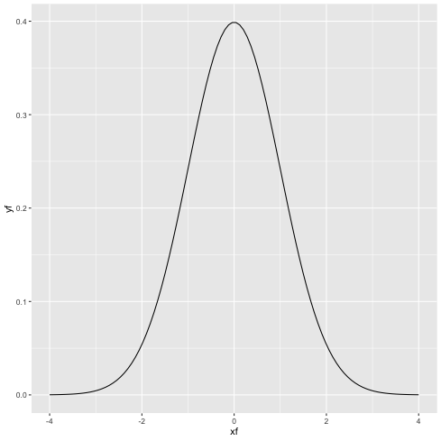
時系列データの取り扱い
1: # test.data には日付(date)と時刻(time 09:03:02) 列があるとする. 2: d <- read.table('test.data', sep='\t', header=TRUE) 3: # datetime という新しい列をつくるとき. 4: # datetime 列は "date time" とする 5: d$datetime <- paste(d$date, d$time, sep=' ') 6: # POSIX 形式に変換 7: d$datetime <- as.POSIXct(d$datetime) 8: p <- ggplot(data=d) + geom_lines(mapping=aes(x=datetime, y=Y))
4.3 ggplot2 による時系列グラフの作成
tidyverse を使うと, 日付っぽい部分が勝手に日付オブジェクトとなるので自動でいい感じのグラフが描ける.
Out_of_Range 列のデータのみのグラフを描いてみる
1: library(tidyverse) 2: df <- read_csv("data/rv.csv") # 作成したもの 3: p <- ggplot(data=df) + geom_line(mapping=aes(x=date,y=Out_of_Range)) 4: plot(p) 5: fname = 'images/r01.png' 6: ggsave(p,file=fname,dpi=70)
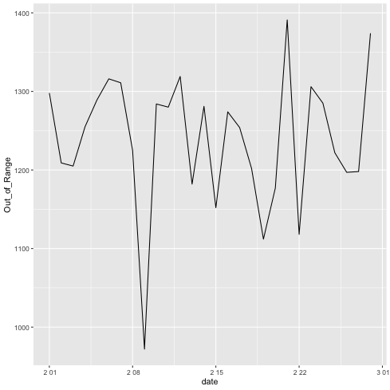
プレーンな dataframe を使う場合は, 日付部分を POSIXct クラスに変更する.
3 行目でやってる.
1: library(ggplot2) 2: df <- read.csv(file='data/r.csv',header=TRUE) 3: df$date <- as.POSIXct(df$date) 4: p <- ggplot(data=df) + geom_line(mapping=aes(x=date,y=Out_of_Range)) 5: plot(p) 6: fname = 'images/r03.png' 7: ggsave(p,file=fname,dpi=70)
同じ図が描けた.
一枚のグラフに複数のデータを載せる場合.
Out_of_Range 列と Fat_Burn 列を描く.
1: library(tidyverse) 2: df <- read_csv("data/rv.csv") # 作成したもの 3: p <- ggplot(data=df) + geom_line(mapping=aes(x=date,y=Out_of_Range), color="blue") 4: p <- p + geom_line(mapping=aes(x=date,y=Fat_Burn),color="orange") + ylab("min") 5: plot(p) 6: fname = 'images/r04.png' 7: ggsave(p,file=fname,dpi=70)
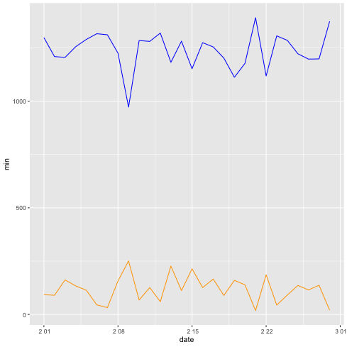
R の場合は色々処理する前のデータでそのまま描ける.
1: library(tidyverse) 2: df0 <- read_tsv("data/heart_beats_summary_2021-02.data") 3: head(df0)
# A tibble: 6 x 4 date cat cal min <date> <chr> <dbl> <dbl> 1 2021-02-01 Out_of_Range 1549. 1298 2 2021-02-01 Fat_Burn 350. 93 3 2021-02-01 Cardio 108. 15 4 2021-02-01 Peak 0 0 5 2021-02-02 Out_of_Range 1437. 1209 6 2021-02-02 Fat_Burn 438. 90
1: library(tidyverse) 2: df0 <- read_tsv("data/heart_beats_summary_2021-02.data") 3: p <- ggplot(data=df0) + geom_line(mapping=aes(x=date,y=min,color=cat)) 4: plot(p) 5: fname = 'images/r05.png' 6: ggsave(p,file=fname, dpi=70)
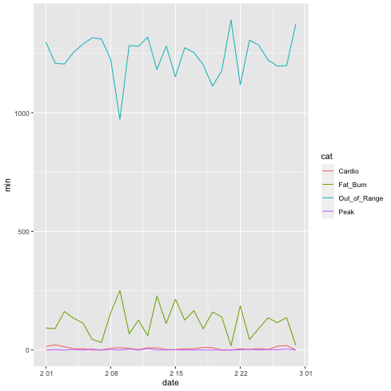
複数のグラフを描く場合
gridExtra を使おう.
1: library(tidyverse) 2: library(gridExtra) 3: df <- read_csv("data/rv.csv") # 作成したもの 4: p1 <- ggplot(data=df) + geom_line(mapping=aes(x=date,y=Out_of_Range), color="blue") + xlab("") 5: p2 <- ggplot(data=df) + geom_line(mapping=aes(x=date,y=Fat_Burn), color="orange") + xlab("") 6: p3 <- ggplot(data=df) + geom_line(mapping=aes(x=date,y=Cardio), color="magenta") + xlab("") 7: p4 <- ggplot(data=df) + geom_line(mapping=aes(x=date,y=Peak), color="cyan") 8: # grid.arrange(p1,p2,p3,p4,nrow=4) # 4 つ縦に並べる 9: h <- arrangeGrob(p1,p2,p3,p4,nrow=4) 10: fname = 'images/r06.png' 11: ggsave(h,file=fname,dpi=70)
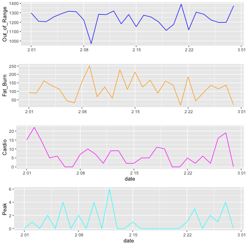
プログラム 4 - 6 行目 xlab("") で x 軸のタイトル "date" を書かない.
プログラム 9 行目 arrangeGrob(p1, p2, p3, p4, nrow=4) nrow=4 で 4 つ縦に並べる.
4.4 Python
4.5 matplotlib(基礎)
matplotlib によるグラフ作成のテンプレートはこんな感じ.
常にオブジェクト指向的に書くのがわかりやすいのでは.
plt class -> figure object を作成 (figure) -> axes object を作成 (add_subplot)-> axes object が一つのグラフを作成
1: import matplotlib.pyplot as plt 2: import numpy as np 3: # データ作成例 4: x = np.linspace(-4,4, 100) # -4 から 4 まで 100 分割 5: # ガウス関数 いちいち定義する必要あるのか... 面倒だなぁ. 6: def gauss(x,mu,sig): 7: return np.exp(-np.power(x -mu, 2.0)/ (2*np.power(sig,2))) 8: y = gauss(x,0,1) 9: # データ作成例ここまで 10: # ここからグラフ作成 11: fig = plt.figure() # plt クラスから figure object 12: ax = fig.add_subplot(1,1,1) # figure から axes object (1 行 1 列の 1 番目のグラフ = 1 枚のグラフを全体に描く) 13: ax.plot(x,y) # axes object が一つのグラフを描画する 14: fig.show() 15: # グラフの保存 16: fname = 'images/p00.png' 17: fig.savefig(fname, format='png', dpi=70)
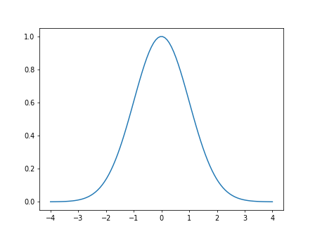
時系列グラフでは x 軸が日付・時間であることが多いだろう.
軸目盛の設定(locator, formatter)を軸に対して行う.
参考:
matplotlib.datesで時系列データのグラフの軸目盛の設定をする | 分析小箱
時系列データの可視化：datetime型のx軸操作 - Qiita
Matplotlib で X 軸の目盛りラベルテキストを回転させる方法 | Delft スタック
1: import matplotlib.dates as mdates 2: # 目盛の指定 3: xloc = mdates.HourLocator(byhour=range(0,24,4)) # 0-24時間 まで, 4 時間おきに目盛 4: # ax は作成された axes object 5: ax.xaxis.set_major_locator(xloc) # minor_locator もある(補助目盛) 6: # x 軸の文字列 format の指定 7: xfmt = mdates.DateFormatter("%H:%M") # 目盛の書かせ方. ここでは 00:00 形式で 8: ax.xaxis.set_major_formatter(xfmt) 9: # x 軸の文字列を斜めに書くとき 10: labels = ax.get_xticklabels() 11: plt.setp(labels, rotation=45, fontsize=10)
その他の設定事項
1: import calendar 2: # ax は作成された axes object 3: ax.set_title('heart beats summary') 4: 5: ax.set_xlabel('Date') 6: ax.set_ylabel('heart_beat') 7: 8: dlst = calendar.monthrange(2021,4)[1] # 月末日 9: ax.set_xlim(dt.datetime(2021,4,1), dt.datetime(2021,4,dlst)) 10: ylim = (50,200) 11: ax.set_ylim(*ylim)
グラフ作成
1: # 積み上げ棒グラフなら 2: ax.bar(df.date, df.Out_of_Range) 3: ax.bar(df.date, df.Fat_Burn, bottom=df.Out_of_Range,color='green') 4: ax.bar(df.date, df.Cardio, bottom=df.Out_of_Range+df.Fat_Burn,color='orange') 5: ax.bar(df.date, df.Peak, bottom=df.Out_of_Range+df.Fat_Burn+df.Cardio,color='red')
1: # 描画 2: fig.show() 3: # 保存 4: fig.save("output.png", format="png", dpi=70)
4.6 matplotlib による時系列グラフの作成
pandas でデータを dataframe に格納し, plt -> fig -> ax object を使って図を描画する.
典型的な一連の流れ.
1: import pandas as pd 2: import matplotlib.pyplot as plt 3: import matplotlib.dates as mdates 4: 5: df = pd.read_csv('data/h.csv',parse_dates=[0]) 6: 7: fig = plt.figure(dpi=100, figsize=(4,3)) 8: ax = fig.add_subplot(1,1,1) # figure から axes object (1 行 1 列の 1 番目) 9: ax.plot(df.date, df.Out_of_Range) 10: 11: fname = 'images/p01.png' 12: fig.show() 13: fig.savefig(fname)
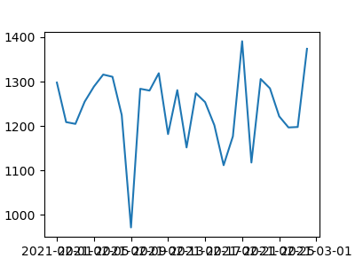
横軸の文字が重なってよくわからん状態になっている. 何とかしないと.
locator, formatter を修正する.
DayLocator, DateFormatter を使う.
参考:
matplotlib.datesで時系列データのグラフの軸目盛の設定をする | 分析小箱
時系列プロットはじめました〜python編〜 - Qiita
1: import pandas as pd 2: import matplotlib.pyplot as plt 3: import matplotlib.dates as mdates 4: 5: df = pd.read_csv('data/h.csv',parse_dates=[0]) 6: 7: fig = plt.figure(dpi=100, figsize=(5,3)) 8: ax = fig.add_subplot(1,1,1) # figure から axes object (1 行 1 列の 1 番目) 9: ax.plot(df.date, df.Out_of_Range) 10: 11: # 横軸は時系列 12: xloc = mdates.DayLocator(bymonthday=None, interval=7) 13: xfmt = mdates.DateFormatter("%Y-%m-%d") 14: ax.xaxis.set_major_locator(xloc) 15: ax.xaxis.set_major_formatter(xfmt) 16: # 斜めに書く場合 17: labels = ax.get_xticklabels() 18: plt.setp(labels, rotation=45, fontsize=10) 19: 20: fname = 'images/p02.png' 21: fig.show() 22: fig.savefig(fname)
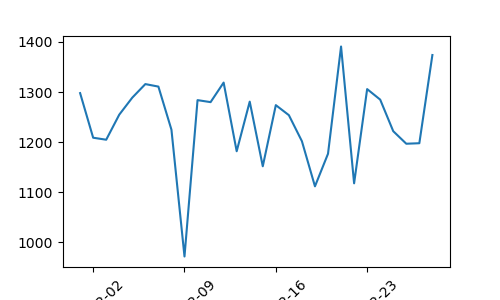
横軸文字列はみ出してるんだけど.
plt.tight_layout() とすると自動で調整してくれるようだ. これは便利.
参考:
matplotlibでグラフの文字サイズを大きくする - Qiita
1: import pandas as pd 2: import matplotlib.pyplot as plt 3: import matplotlib.dates as mdates 4: 5: df = pd.read_csv('data/h.csv',parse_dates=[0]) 6: 7: fig = plt.figure(dpi=100, figsize=(5,3)) 8: ax = fig.add_subplot(1,1,1) # figure から axes object (1 行 1 列の 1 番目) 9: ax.plot(df.date, df.Out_of_Range) 10: 11: # 横軸は時系列 12: xloc = mdates.DayLocator(bymonthday=None, interval=7) 13: xfmt = mdates.DateFormatter("%Y-%m-%d") 14: ax.xaxis.set_major_locator(xloc) 15: ax.xaxis.set_major_formatter(xfmt) 16: # 斜めに書く場合 17: labels = ax.get_xticklabels() 18: plt.setp(labels, rotation=45, fontsize=10) 19: # 配置をいい感じにする 20: plt.tight_layout() 21: 22: fname = 'images/p03.png' 23: fig.show() 24: fig.savefig(fname)
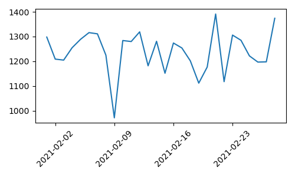
一つのグラフに複数のグラフを描く場合
参考:
matplotlibでグラフの文字サイズを大きくする - Qiita
1: import pandas as pd 2: import matplotlib.pyplot as plt 3: import matplotlib.dates as mdates 4: 5: df = pd.read_csv('data/h.csv',parse_dates=[0]) 6: 7: fig = plt.figure(dpi=100, figsize=(5,3)) 8: ax = fig.add_subplot(1,1,1) # figure から axes object (1 行 1 列の 1 番目) 9: ax.plot(df.date, df.Out_of_Range, label='out_of_range') 10: # そのまま書いてけばいい 11: ax.plot(df.date, df.Fat_Burn, label='fat_burn') 12: # 凡例が必要か？ 13: ax.legend(fontsize=10) 14: 15: # 横軸は時系列 16: xloc = mdates.DayLocator(bymonthday=None, interval=7) 17: xfmt = mdates.DateFormatter("%Y-%m-%d") 18: ax.xaxis.set_major_locator(xloc) 19: ax.xaxis.set_major_formatter(xfmt) 20: # 斜めに書く場合 21: labels = ax.get_xticklabels() 22: plt.setp(labels, rotation=45, fontsize=10) 23: # 配置をいい感じにする 24: plt.tight_layout() 25: 26: fname = 'images/p04.png' 27: fig.show() 28: fig.savefig(fname)
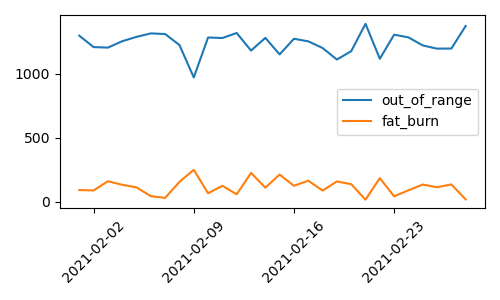
複数のグラフを揃えて描く場合
1: import pandas as pd 2: import matplotlib.pyplot as plt 3: import matplotlib.dates as mdates 4: 5: df = pd.read_csv('data/h.csv',parse_dates=[0]) 6: 7: fig = plt.figure(dpi=100, figsize=(3,5)) 8: ax1 = fig.add_subplot(2,1,1) # figure から axes object (2 行 1 列の 1 番目) 9: ax1.plot(df.date, df.Out_of_Range) 10: # 二つ目のグラフ 11: ax2 = fig.add_subplot(2,1,2, sharex=ax1) # 2 行 1 列の 2 番目, ax1 の x 軸を共有する 12: ax2.plot(df.date, df.Fat_Burn, color="green", marker='.') # データに . つきのグラフにしてみる 13: 14: # 一つ目のグラフの x 軸ラベルは要らない 15: ax1.tick_params(labelbottom=False) 16: 17: # 横軸は時系列 18: xloc = mdates.DayLocator(bymonthday=None, interval=7) 19: xfmt = mdates.DateFormatter("%Y-%m-%d") 20: ax2.xaxis.set_major_locator(xloc) 21: ax2.xaxis.set_major_formatter(xfmt) 22: # 斜めに書く場合 23: labels = ax2.get_xticklabels() 24: plt.setp(labels, rotation=45, fontsize=10) 25: 26: # title 27: ax1.set_title('out_of_range',fontsize=10) 28: ax2.set_title('fat_burn', fontsize=10) 29: 30: # 配置をいい感じにする 31: plt.tight_layout() 32: 33: fname = 'images/p05.png' 34: fig.show() 35: fig.savefig(fname)
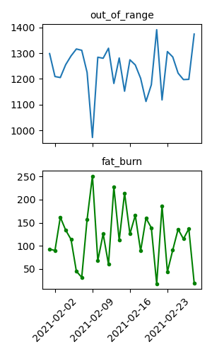
4.7 plotline による時系列グラフの作成
Python での描画と言えば matplotlib だが,
ggplot2 のように, データ加工前の元々のデータでグラフを描けないんかなぁ. と思ったりもする.
元々のデータ構造はこんな感じなんだけど.
1: import pandas as pd 2: df = pd.read_csv("data/heart_beats_summary_2021-02.data",sep="\t",header=0, parse_dates=[0], usecols=[0,1,3]) 3: print(df.head(5))
date cat min
0 2021-02-01 Out_of_Range 1298
1 2021-02-01 Fat_Burn 93
2 2021-02-01 Cardio 15
3 2021-02-01 Peak 0
4 2021-02-02 Out_of_Range 1209
このデータを読み込んで cat ごとに色を変えてグラフを描きたい.
参考:
https://stackoverflow.com/questions/41494942/pandas-dataframe-groupby-plot
https://scentellegher.github.io/programming/2017/07/15/pandas-groupby-multiple-columns-plot.html
上の URL を見てみたが, うーん何かめんどくさそう.
更に調べてたら ggplot2 とほぼ同様の書き方でいける plotline というパッケージがあるのを見つけた.
これを使ったほうがいいかな？
入ってなかったのでインストールする.
こんな風にインストールできるようだ:
shell@: conda install -c conda_forge plotnine
早速これでグラフを作ってみる.
1: import pandas as pd 2: from plotnine import ggplot, geom_line, aes, ggsave 3: import plotnine 4: 5: df = pd.read_csv("data/heart_beats_summary_2021-02.data",sep="\t",header=0, parse_dates=[0], usecols=[0,1,3]) 6: p = ggplot() + geom_line(data=df, mapping=aes(x='date', y='min', color='cat')) 7: fname = 'images/p06.png' 8: ggsave(p,filename=fname, format='png',dpi=70)
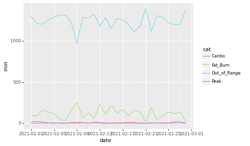
ggplot2 と同じじゃん…
ggplot2 に慣れてるなら結構いいかも？
参考:
Pythonのデータ視覚化パッケージの代替としてのPlotnineの紹介
A Grammar of Graphics for Python — plotnine 0.8.0 documentation
date の label を 45°回転
python - Plotnine rotating labels - Stack Overflow
1: import pandas as pd 2: from plotnine import ggplot, geom_line, aes, ggsave, theme, element_text 3: import plotnine 4: df = pd.read_csv("data/heart_beats_summary_2021-02.data",sep="\t",header=0, parse_dates=[0], usecols=[0,1,3]) 5: p = ggplot() + geom_line(data=df, mapping=aes(x='date', y='min', color='cat')) 6: p = p + theme(axis_text_x = element_text(rotation=45, hjust=1)) 7: fname = 'images/py07.png' 8: ggsave(p,filename=fname, format='png',dpi=70)
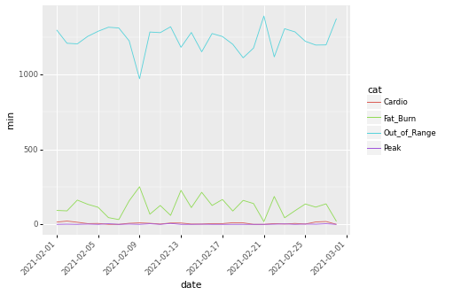
独立に図を描く
facet_wrap('~cat', nrow=4) # 'cat' ごとに 4 行のグラフを描く.
1: import pandas as pd 2: from plotnine import ggplot, geom_line, aes, ggsave, theme, element_text, facet_wrap 3: import plotnine 4: df = pd.read_csv("data/heart_beats_summary_2021-02.data",sep="\t",header=0, parse_dates=[0], usecols=[0,1,3]) 5: p = ggplot(data=df, mapping=aes(x='date',y='min',color='cat')) + geom_line() 6: p = p + theme(axis_text_x = element_text(rotation=45, hjust=1)) + facet_wrap('~cat',nrow=4) 7: fname = 'images/py08.png' 8: ggsave(p,filename=fname, format='png',dpi=70)
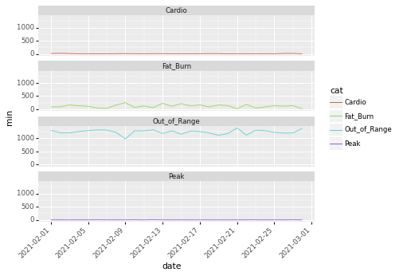
割と素晴らしいかも.
4.8 Julia
4.9 PyPlot(基礎)
PyPlot は, Matplotlib と同様の書き方が出来る. 標準の Plots よりも良いらしい？
参考:
JuliaとMatplotlibでグラフを作る際のハマりポイントとサンプルプログラム集 - EurekaMoments
Julia早引きノート［23］JuliaでのMatplotlibによるグラフ描画 - Qiita –> matplotlib でも使えるよく使うパラメータ
テンプレートはこんな感じか
1: using PyPlot 2: 3: # ダミーデータ 4: x = range(0,2π, step=0.1) # 0 から 2π まで 0.1刻みでベクトルデータを作成 5: y = [] 6: z = [] 7: # sin と cos にする. 8: for i in x 9: push!(y,sin(i)) 10: push!(z,cos(i)) 11: end 12: 13: # matplotlib と同様に書ける！！ 14: fig = figure() 15: ax1 = fig.add_subplot(2,1,1) 16: ax1.plot(x,y) 17: 18: ax2 = fig.add_subplot(2,1,2) 19: ax2.plot(x,z) 20: 21: fig.tight_layout() 22: fname = "images/j00.png" 23: fig.savefig(fname)
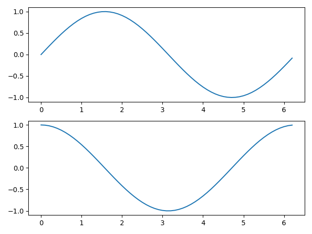
PyPlot だとほぼ matplotlib と同じ要領でグラフを描けるようだ.
1: # 折れ線の場合 2: plot(x,y, color="m", marker="o", markerfacecolor="r", linestyle="-", label=raw"$\sin(x)$") 3: # 色: b=blue, g=green, r=red, c=cyan, m=magenta, y=yellow, k=black,w=white 4: # マーカの種類: o=円, s=square, p=pentagon, *=star, +=プラス記号, D=ダイアモンド 5: # markerfacecolor=マーカの色 6: # linestyle=線の種類: -=実戦 --=破線, -.=破線(点入り) :=点線 7: legend() # label の文字を凡例として使う. 8: 9: # 棒グラフ 10: bar(x,y) 11: 12: # ヒストグラム 13: hist(data) 14: 15: # 散布図 16: scatter(x,y) 17: 18: title("hoo") 19: xlabel("x label") 20: ylabel("y label") 21: 22: grid(true) 23: 24: savefig("hoge.png") 25: 26: #x 目盛り 27: x_ticks_name([1,2,3], ["first","second","third"]) # 1,2,3 のとこに first, second, third 28: 29: # 範囲 30: xlim(0, π) 31: ylim(0, nothing) # 上限が無いばあい. nothing を使う.
4.10 PyPlotによる時系列グラフの作成
Out_of_Range 列の時系列グラフの作成
1: using CSV, DataFrames, PyPlot 2: df = CSV.read("data/j.csv",DataFrame) 3: 4: fig = figure(dpi=100, figsize=(4,3)) 5: ax = fig.add_subplot(1,1,1) 6: ax.plot(df.date, df.Out_of_Range) 7: 8: fig.tight_layout() 9: fname="images/j01.png" 10: fig.savefig(fname)
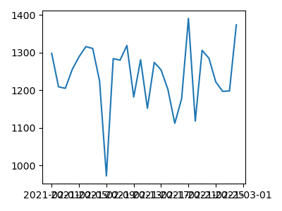
matplotlib と同じようにいけた…
横軸についても同じように行けるんだろうか.
Python の横軸に関する部分のソースコードは以下だけど.
1: import matplotlib.pyplot as plt 2: import matplotlib.dates as mdates 3: ... 4: xloc = mdates.DayLocator(bymonthday=None, interval=7) 5: xfmt = mdates.DateFormatter("%Y-%m-%d") 6: ax.xaxis.set_major_locator(xloc) 7: ax.xaxis.set_major_formatter(xfmt) 8: # 斜めに書く場合 9: labels = ax.get_xticklabels() 10: plt.setp(labels, rotation=45, fontsize=10)
matplotlib.dates で行けるのかも？
Various Julia plotting examples using PyPlot · GitHub
1: using CSV, DataFrames, PyPlot 2: df = CSV.read("data/j.csv",DataFrame) 3: 4: fig = figure(dpi=100, figsize=(4,3)) 5: ax = fig.add_subplot(1,1,1) 6: ax.plot(df.date, df.Out_of_Range) 7: 8: xloc = matplotlib.dates.DayLocator(interval=7) # bymonthly=None <-- None なんて知らんというエラーになってしまったのでここは変更 9: xfmt = matplotlib.dates.DateFormatter("%Y-%m-%d") 10: ax.xaxis.set_major_locator(xloc) 11: ax.xaxis.set_major_formatter(xfmt) 12: 13: labels = ax.get_xticklabels() 14: plt.setp(labels, rotation=45, fontsize=10) 15: 16: fig.tight_layout() 17: fname="images/j02.png" 18: fig.savefig(fname)
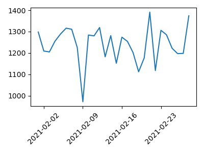
行けたようだ.
同様に, 一つのグラフに複数のグラフを描く場合
1: using CSV, DataFrames, PyPlot 2: df = CSV.read("data/j.csv",DataFrame) 3: 4: fig = figure(dpi=100, figsize=(5,3)) 5: ax = fig.add_subplot(1,1,1) 6: ax.plot(df.date, df.Out_of_Range, label="out_of_range") 7: ax.plot(df.date, df.Fat_Burn, label="fat_burn") 8: 9: ax.legend(fontsize=10) 10: 11: xloc = matplotlib.dates.DayLocator(interval=7) # bymonthly=None <-- None なんて知らんというエラー 12: xfmt = matplotlib.dates.DateFormatter("%Y-%m-%d") 13: ax.xaxis.set_major_locator(xloc) 14: ax.xaxis.set_major_formatter(xfmt) 15: 16: labels = ax.get_xticklabels() 17: plt.setp(labels, rotation=45, fontsize=10) 18: 19: fig.tight_layout() 20: fname="images/j04.png" 21: fig.savefig(fname)
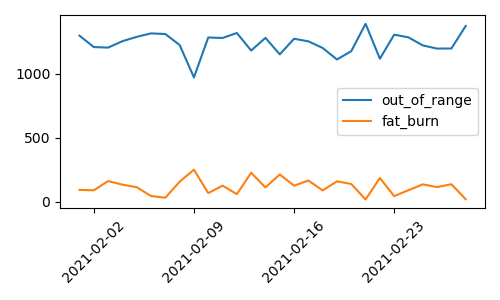
複数のグラフを揃えて描く場合
1: using CSV, DataFrames, PyPlot 2: df = CSV.read("data/j.csv",DataFrame) 3: 4: fig = figure(dpi=100, figsize=(3,5)) 5: ax1 = fig.add_subplot(2,1,1) 6: ax1.plot(df.date, df.Out_of_Range, label="out_of_range") 7: 8: ax2 = fig.add_subplot(2,1,2, sharex=ax1) 9: ax2.plot(df.date, df.Fat_Burn, label="fat_burn", color="green", marker=".") 10: 11: # 上のグラフの x 軸ラベルは要らない 12: ax1.tick_params(labelbottom=false) 13: 14: # ax2 の x 軸ラベル 15: xloc = matplotlib.dates.DayLocator(interval=7) # bymonthly=None <-- None なんて知らんというエラー 16: xfmt = matplotlib.dates.DateFormatter("%Y-%m-%d") 17: ax2.xaxis.set_major_locator(xloc) 18: ax2.xaxis.set_major_formatter(xfmt) 19: labels = ax2.get_xticklabels() 20: plt.setp(labels, rotation=45, fontsize=10) 21: 22: # title 23: ax1.set_title("out_of_range", fontsize=10) 24: ax2.set_title("fat_burn", fontsize=10) 25: 26: fig.tight_layout() 27: fname="images/j05.png" 28: fig.savefig(fname)
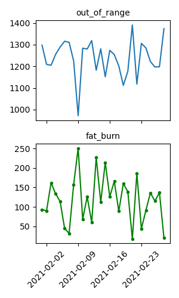
同じ図ができた.
同じライブラリ使ってるから当然か.
PyPlot のたくさんの例
Various Julia plotting examples using PyPlot · GitHub
4.11 RCall(ggplot2)による時系列グラフの作成
RCall というのを使うと, R のコードが使えるらしい.
Julia 経由で ggplot2 を使ってグラフを描いてみる.
1: using CSV, DataFrames 2: 3: df = CSV.read("data/heart_beats_summary_2021-02.data",delim="\t", DataFrame); 4: 5: using RCall 6: R"""Sys.setenv(LANG="en")""" 7: @rimport base as R 8: @rlibrary ggplot2 9: 10: p = ggplot(data=df) + geom_line(mapping=aes(x=:date, y=:min, color=:cat)) 11: fname = "images/j06.png" 12: ggsave(p,file=fname,dpi=70)
1: using CSV, DataFrames 2: 3: df = CSV.read("data/heart_beats_summary_2021-02.data",delim="\t", DataFrame); 4: 5: using RCall 6: R"""Sys.setenv(LANG="en")""" 7: @rimport base as R # org-babel でここがエラー？ 8: @rlibrary ggplot2 # org-babel でここがエラー？ 9: 10: p = ggplot(data=df) + geom_line(mapping=aes(x=:date, y=:min, color=:cat)) 11: p = p + facet_wrap("~cat",nrow=4) # rotation=45 は使えないようだ. 12: fname = "images/j07.png" 13: ggsave(p,file=fname,dpi=70)
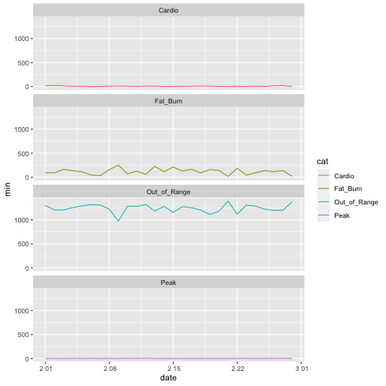